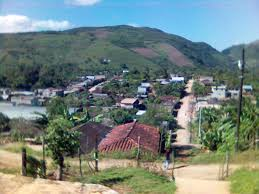
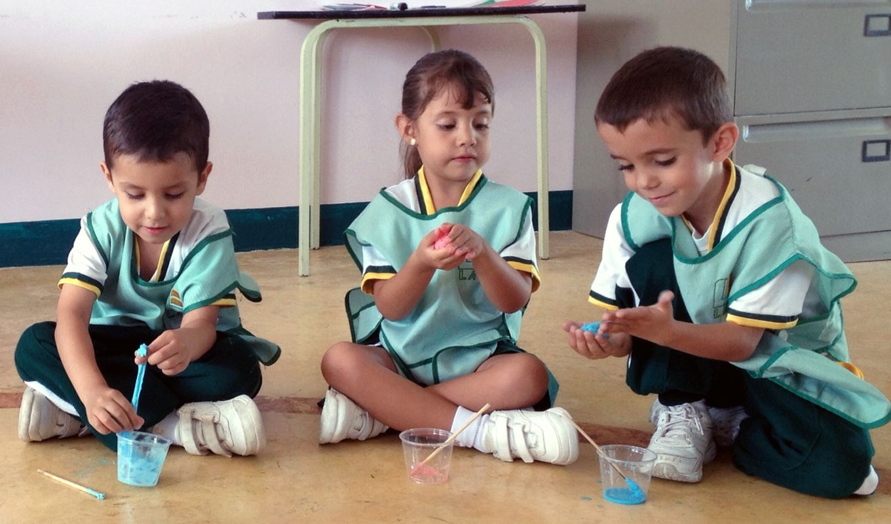
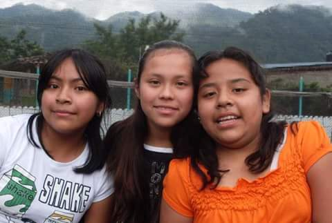
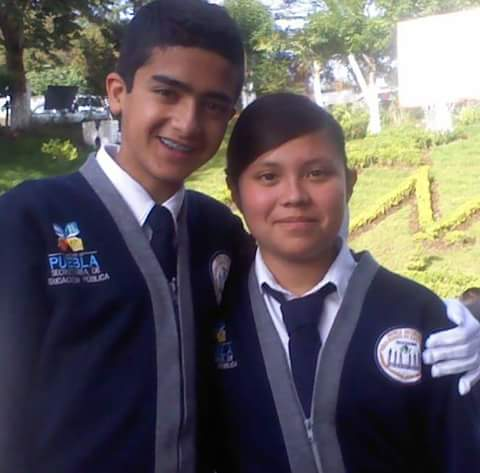
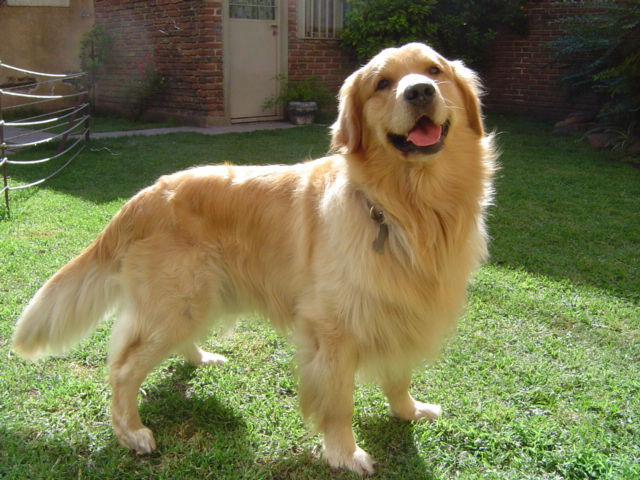
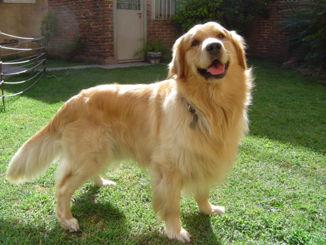

"AUTOBIOGRAFIA"
Hannia Ivette Rosales Santos.
Datos
Mi nombre es Hannia Ivette Rosales Santos. Naci el 19 de Diciembre de 1998 en Avila Camacho Puebla ahora La Ceiba. Mi tipo de sangre es A Positivo.

Hannia Ivette Rosales Santos.
Gustos
Me gusta escuchar musica, ir a pasear, salir con las amigas a dar la vuelta o al cine,me gusta jugar volibol y un poco el basquet, me gusta ver mucho la televicion, ver mis redes sociales, y bailar un poco.

Hannia Ivette Rosales Santos
Estudios
Estudie 2 años en el kinder Estela Morales De Jimenez, el primer año de primaria lo curse en la escuela Primaria Alberto Jimenez Balderrabano, me cambiaron de escuela en segundo grado y fue a la Primaria Venustiano Carranza El Potro, termine la primaria y entre a la Secundaria Niños Heroes De Chapultepec lo cual se me hizo un poco pesado el primer año y reprobe una materia, el segundo año segui igual y en tercer año mejore un poco, sali de la secundaria y entre al Centro De Bachillerato Tecnico industrial y de servivos No.86 osea el CBTis, aqui estudio la carrera de Tecnico en Programacion.



Hannia Ivette Rosales Santos
Logros
Mis logros personales seria terminar la escuela la primaria, la secunaria y espero terminar el bachilleres y empezar con la universidad.
.jpg)
Hannia Ivette Rosales Santos
Mascotas
Las mascotas que eh tenido han sido una parejita de pericos que me regalaron hace mucho tiempo, un perro frenchpoodl llamado popi que lo mataron, y ahorita tengo un perro labrador llamado canelo.
 

Hannia Ivette Rosales Santos